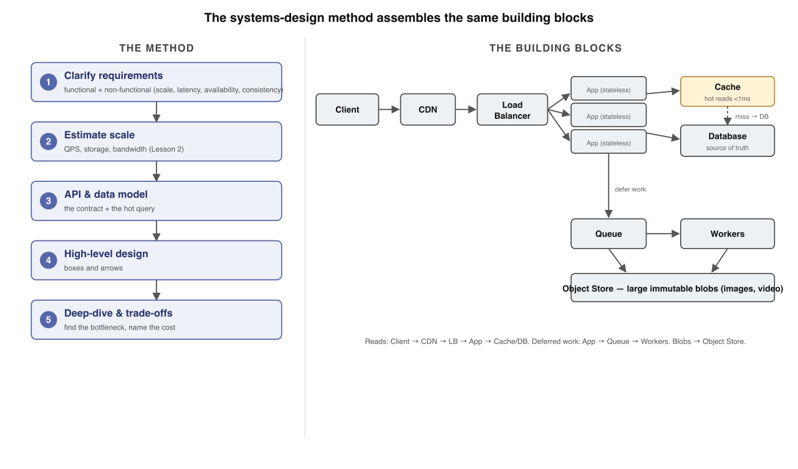
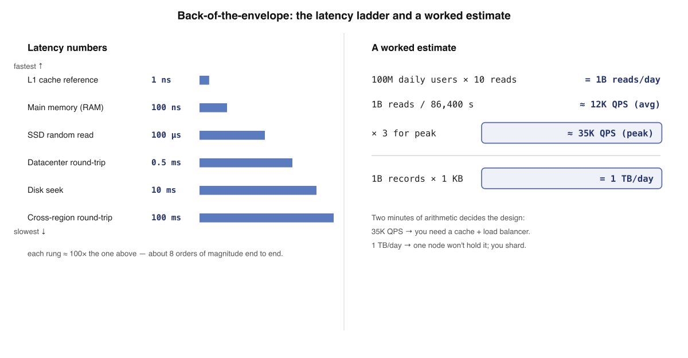
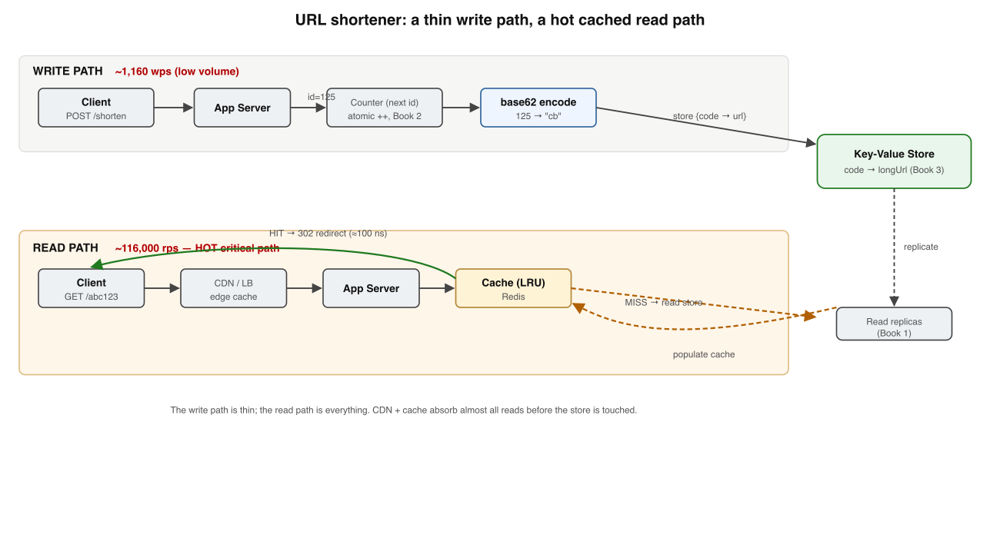
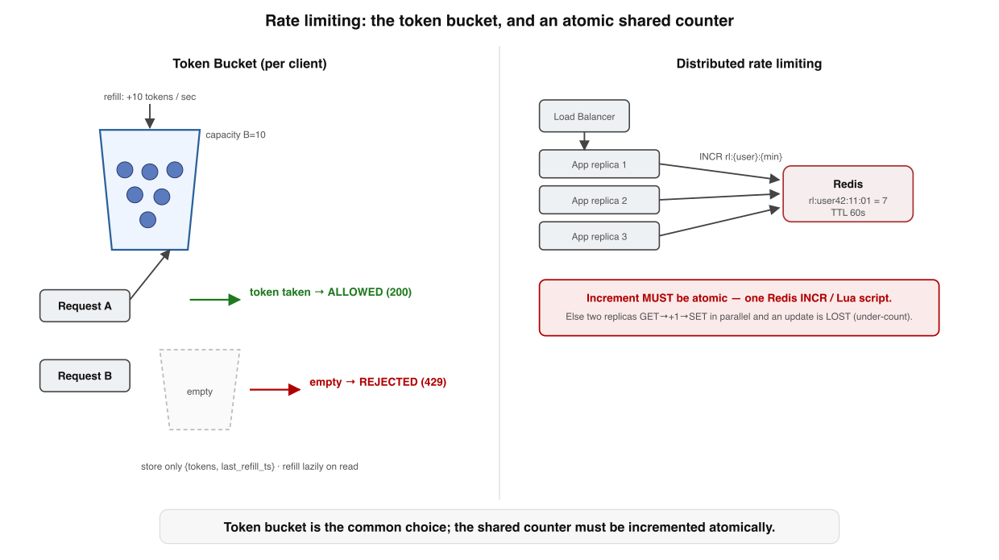
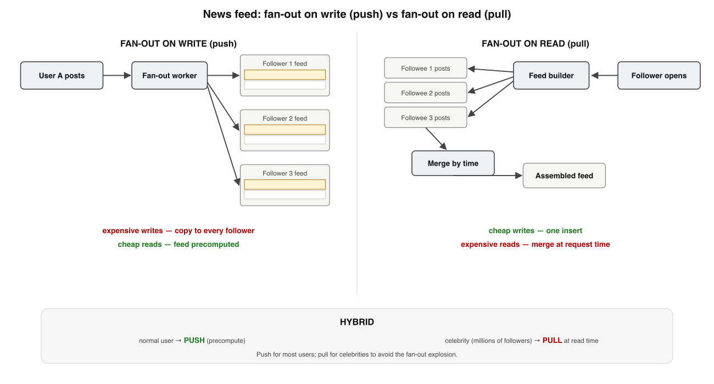
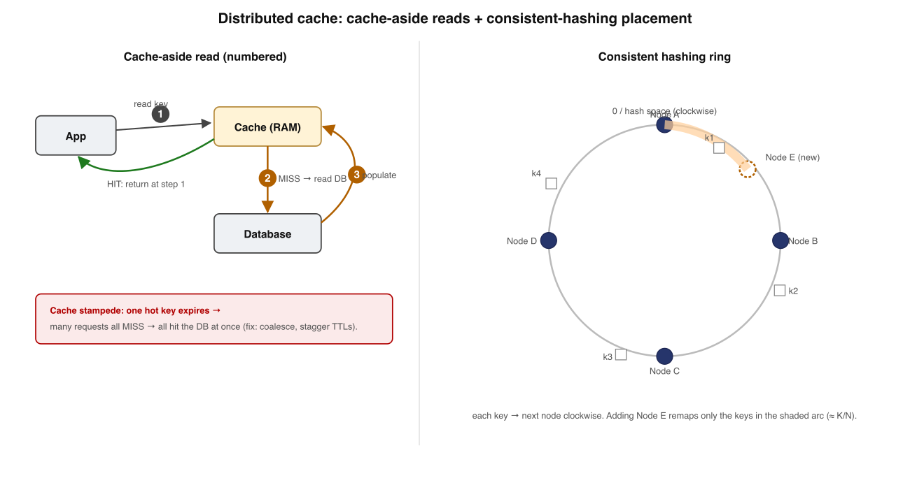
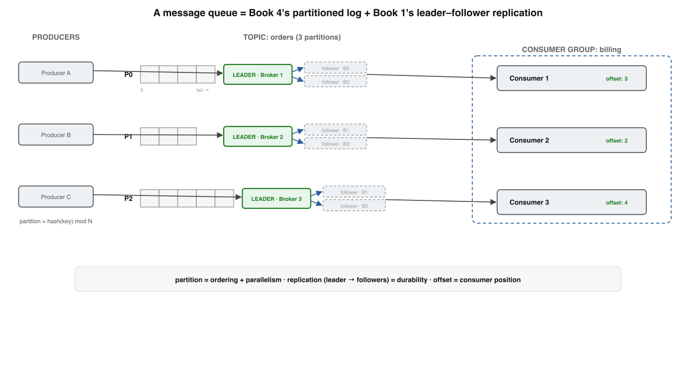
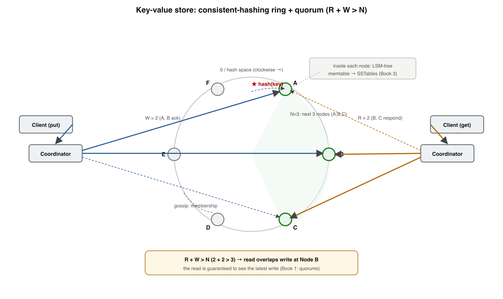
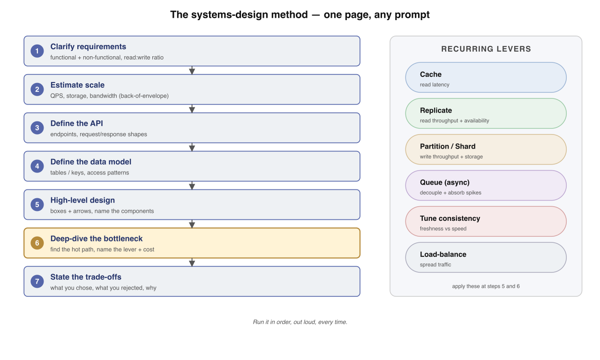

~40 min · 9 designs on 1 method · worked architectures + interview questions · interactive recall
Your bar: walk into any blank-page design — interview or real review — and never freeze.
One repeatable method drives every system in this book, so each design becomes filling in boxes,
not improvising. Grounded in Alex Xu's System Design Interview1
and Kleppmann's DDIA.2
One sentence holds the whole method. Every design just runs it in order:
Clarify functional + non-functionalEstimate QPS, storage, bandwidthAPI + data model for the hot queryDraw the boxes & arrowsDeep-dive the bottleneck & name the trade-off
Memorise this banner. The next eight designs are this method applied to a new requirement set.
1
The design method — never start by drawing boxes
Designing a system is not improvisation. It is a five-step gate you run in order.

The method (left) and the canonical web-scale shape it draws (right): client → CDN → load balancer → stateless app servers → cache → DB, with a queue + workers for deferred writes and an object store for blobs.
Non-functional dimension
The question you ask
Where the answer lives
Scale
How many users, QPS, GB/day?
Lesson 2 (estimation)
Latency
p99 read/write budget in ms?
Storage + caching
Availability
Tolerate a region loss?
Replication, quorums
Consistency
Read-your-writes, or eventual OK?
Consistency models
The hinge question "Is a 200 ms-stale read OK?" Yes → caching + async replication unlock. No → you've committed to a quorum or single-leader path, and its cost.
Keep the app tier stateless Push state down into cache + DB; then any replica can die and you scale by adding identical ones behind the LB.5
Six universal blocks LB · cache · DB · message queue · CDN · object store. You wire these same six for the next eight lessons.
There is no "best" Only an architecture matched to the requirements you clarified in step 1. State the trade-off you chose.
✗ "Start by sketching the architecture"
✓ Start by understanding what + at what scale, then commit to a shape
🧭 Memory rule: Clarify → Estimate → API + data → Draw → Deep-dive. The estimate, not the features, decides whether you shard from day one.
Memory check
Five steps in order? → clarify, estimate, API+data, draw, deep-dive
Which step forces partitioning? → estimate (the storage/QPS arithmetic)
Why keep the app tier stateless? → scale by adding replicas, survive instance loss
2
Back-of-the-envelope estimation — the bridge to architecture
Two minutes of arithmetic decides "one box" vs "a thousand." Correct to within 10× is enough.
The takeaway is the gaps, not the digits. Memorise the four ~100× jumps; a cache buys a 1000× leap back up the ladder.3
🧮 The QPS formula: avg QPS = (DAU × actions/day) ÷ 86,400, then peak ≈ avg × 2–3. There are 86,400 seconds in a day — that's the denominator of every estimate.

Worked example: 100M DAU × 10 reads = 1B/day ÷ 86,400 ≈ 12K avg QPS, ×3 ≈ 35K peak. 1B writes/day × 1 KB × 3 replicas ≈ 1 PB/year → unambiguously a sharded fleet.
The anchor number A record is ~1 KB. A tweet, an order, a Kafka event — call it 1 KB unless you know better. Billions of records → terabytes by inspection.
One multiply per resource QPS, storage, bandwidth, memory each get one multiplication. Whichever blows past a single machine is your deep-dive.
Biggest gap on the ladder? → RAM vs cross-region, ~200,000×
Why is a 2× error fine? → decisions differ by 1000×, so 2× never flips the answer
3
URL shortener — the canonical read-amplifier
One write is read thousands of times. Optimise the read path first; the write path can be almost naive.

Estimate: 100M URLs/day → ~1.2K wps, ~116K rps (100:1), ~180 TB over 10 years. Two conclusions: reads need a cache + CDN; storage forces partitioning.
Generating the short code — the design's centre of gravity
Concern
Hash of URL
Counter + base62
Collisions
Possible; needs retry
None by construction
Same URL → same code
Free
Needs a lookup table
Predictability
Unpredictable
Sequential — guessable
Hotspot
Stateless
Counter is a write hotspot
base62 length math 62⁷ ≈ 3.5 trillion codes — ten years of 100M/day with room. 62⁶ ≈ 56B would run out; 7 chars is the sweet spot.
Break the counter hotspot Hand each app server a range of IDs (a block of 1,000) so it increments locally and coordinates once per block.
Data model = pure KVcode (PK) → longUrl, createdAt. Single-key point lookups, no joins → a KV engine beats a relational schema you never query relationally.
Read chain sheds load CDN → cache → read replica → leader. Immutable mappings mean cache invalidation is nearly free — exploit long TTLs.
✗ "Use a 301 redirect — it's the permanent one"
✓ 301 is browser-cached → you lose click analytics. Pick 302 when tracking is a feature
🔗 Memory rule: A URL shortener is a read-amplifier — counter + base62 gives collision-free codes; the 301-vs-302 call is "save QPS" vs "keep your data."
Memory check
Why read-heavy? → ~100:1 redirects-to-creations
Counter+base62's win? → unique codes, no collision retry
301 vs 302? → 301 cached (saves QPS, loses analytics); 302 hits server every time
4
Rate limiter — atomicity on the hot path
The smallest system in the book, and the one that forces an atomic counter on every single request.

Token bucket allows a request when a token is present, returns 429 when empty. Many gateway replicas issue one atomic INCR against a single Redis key so the limit stays global.
Algorithm
Memory / client
Accuracy
Notes
Fixed window
1 integer
Low (2L at edges)
Cheapest
Sliding-window counter
2 integers
High (~0.003% err)
Best general default
Sliding-window log
O(L) timestamps
Exact
Costly at high L
Token bucket
2 numbers
High, allows bursts
Production default
The lost-update trap Naive GET→+1→SET lets two replicas overwrite each other. Redis INCR is atomic by construction → no lost update.
Multi-step? Use a Lua script Refill + decrement + TTL wrapped in EVAL runs as one atomic unit — a transaction collapsed to one instruction.
Where it lives Standard answer: the API gateway — one chokepoint sees all traffic before fan-out. Add per-service limits for expensive endpoints.
Fail-open vs fail-closed If shared Redis is unreachable, usually fail-open (availability over precision) with a per-replica local fallback.
✗ "Local in-memory counters are fine across replicas"
✓ N replicas fragment the count → effective limit becomes N × L; you need one shared counter
🪣 Memory rule: Token bucket allows bursts up to B at average rate r; correctness across replicas needs an atomic shared counter (Redis INCR / a Lua script).
Memory check
Why does INCR beat read-modify-write? → atomic single step, no interleaved lost update
Fixed-window flaw? → 2L straddling the boundary
Token bucket vs leaky bucket? → token allows bursts; leaky forces a smooth outflow
5
News feed — when do you pay the fan-out cost?
A many-to-many aggregation under a read-latency budget. The one decision: aggregate at write time or read time.

Push (left): copy a post into every follower's precomputed feed → cheap reads, expensive writes. Pull (right): merge followees' posts at read time → cheap writes, expensive reads.
Fan-out on write (push)
Fan-out on read (pull)
Cost of a post
high — write to every follower
low — one insert
Cost of a feed read
low — read precomputed list
high — merge at read time
Wasted work
feeds for inactive users
none
Freshness
a few seconds (fan-out lag)
always current
Push wins by default Reads dominate (~5:1), so precomputing makes the common op a cheap cache lookup. The cost moves to write time.
The celebrity problem One post by a millions-follower account = a fan-out explosion (hot-key / skewed partition) that floods the write path.
The hybrid real systems run Normal users → push. Celebrities → pull (skip fan-out; merge their recent posts in at read time). You pay pull only where push would explode.
Store IDs, not bodies Feed = per-user list of (postId, authorId, createdAt) in a Redis sorted set, capped ~1,000. A viral post is stored once, referenced N times.
✗ "Pure push scales to every account"
✓ It breaks on the high-follower account; the hybrid push+pull split is the resolution
📰 Memory rule: A feed is many-to-many aggregation under a latency budget — push for the masses, pull for celebrities, and run fan-out as an async outbox/log job.
Memory check
Why push as default? → reads dominate; precompute makes them cheap
What breaks pure push? → a millions-follower account posting (fan-out explosion)
Why store IDs not bodies? → store viral post once, reference N times
6
Distributed cache — trade freshness for latency & load
Every cache decision is a bet on how stale a copy you can tolerate in exchange for not touching the DB.

Cache-aside (left): on a miss, read the DB, populate, return. Consistent hashing (right): a key is owned by the next node clockwise; adding a node remaps only one arc (~K/N keys), not all of them.
Strategy
Consistency
Write latency
Failure risk
Cache-aside
Eventual; stale until invalidated
DB only
Stale reads on a race
Write-through
Strong (cache tracks DB)
Cache + DB
Wasted writes
Write-back
Weak; cache leads DB
Cache only
Data loss on crash
The load win 100K rps at 95% hit ratio leaves the DB serving 5K rps — a 20× reduction in the hardest thing to scale.
Why mod-N fails Change N (a deploy, a death) and almost every key remaps → the whole cache cold-starts and hammers the DB. Consistent hashing + virtual nodes fix it.
Cache stampede A hot key expires → every concurrent request misses at once. Fix with request coalescing (single-flight) + jittered/staggered TTLs.
Invalidation is the hard 20% A cache is derived data with no idea when its source changed. TTL is blunt; explicit invalidation is fragile; CDC from the DB's change stream is the robust answer.
✗ "Write-back is just a faster write-through"
✓ Write-back acks from cache memory → a crash in the flush window loses acknowledged data
🗄️ Memory rule: Cache-aside is the workhorse; consistent hashing keeps reshards cheap; the two things that page you are stampede and invalidation.
Memory check
80K rps at 96% hit → DB rps? → ~3,200 (4% miss)
Consistent hashing's win? → a membership change remaps only ~K/N keys
Two stampede fixes? → request coalescing + staggered/jittered TTLs
7
Message queue — the partitioned, replicated log
Decouple producers from consumers. The core choice: a log that doesn't delete on read.

Producers append to a partitioned topic; each partition is replicated leader→followers; a consumer group tracks offsets. Estimate: 1M msg/s × 1 KB × 3 days × RF 3 ≈ 780 TB → a disk-resident system.
Setting
Durability
Latency
Survives
acks=0
none
lowest
nothing
acks=1 (leader)
leader's disk
low
follower loss
acks=all (full ISR)
whole ISR
higher
leader loss (2 of 3)
Log > delete-on-read Reading doesn't delete — the consumer remembers its offset. Buys replayability, multiple independent consumers, cheap append-only durability.
Partition = parallelism + ordering Order holds only within a partition; route by hash(key) mod N so all events for one key stay ordered. More partitions = more throughput, weaker global order.
acks=all is R+W>N in disguise Leader + ISR; an acked write survives losing any 2 of 3 brokers. A new leader is elected from the ISR on failure.
Backpressure = lag A slow consumer just lags (tail offset − consumer offset); the buffer is retention itself. Monitor consumer lag — the #1 operational signal.
✗ "acks=all always means 3 copies"
✓ A silently-shrunk ISR gives acks=1 durability; set min.insync.replicas=2 to reject under-replicated writes
Why can many groups read one topic? → reads don't delete; each group has its own offset
Where is ordering guaranteed? → within a partition, for one key
Slow consumer in a log broker? → it lags; safe until past the retention window
8
Key-value store — the Dynamo ring
Where distributed systems and storage engines meet in one box: partitioned, replicated, tunably consistent.

N guaranteeing overlap." />
A key hashes to a ring position and is replicated on the next N=3 distinct nodes clockwise (its preference list). A W=2 write and an R=2 read overlap because R+W>N.4
Setting
R
W
Behaviour
Balanced
2
2
One node down tolerated; strong-ish reads
Fast write
1
3
Cheap reads, every write hits all replicas
Always writeable
3
1
put survives 2 dead nodes; reads reconcile
R + W > N The W nodes that took the latest write and the R nodes you read must share ≥1 node → the read sees the most recent acknowledged write.
Virtual nodes Each machine claims many small ring positions → load smooths across heterogeneous boxes; a dead node's keys spread across many successors, not one.
Concurrent writes → vector clocks Track causality, not wall-clock. If neither clock descends from the other, the writes are concurrent — return both siblings, let the app merge (the cart unions items).
LSM per node + gossip Write-heavy → LSM-tree (sequential appends), not a B-tree. Merkle-tree anti-entropy repairs drift; gossip spreads membership in O(log N) with no coordinator.
✗ "Last-write-wins by timestamp is safe"
✓ Clocks drift (no global clock) → LWW silently drops an update; vector clocks detect the conflict
💍 Memory rule: The ring places keys + nodes; the preference list replicates; R+W>N tunes consistency; vector clocks catch conflicts; LSM persists each node.
Memory check
R,W for one-down + fresh reads (N=3)? → R=2, W=2
What do virtual nodes solve? → load balance + spread a failed node's keys
Why LSM not B-tree here? → write-heavy; sequential appends beat random in-place writes
9
Putting it together — the universal checklist & five levers
Every design reduces to: which lever, on which box, and what does it cost?

The checklist is a gate, not a menu: Clarify → Estimate → API → Data model → High-level design → Deep-dive the bottleneck → State the trade-offs. The five-lever palette runs down the right.
Lever
What it buys
Reach for it when…
Cache
Read latency, fewer DB hits
read path is hot
Replicate
Read throughput, availability
survive a node loss / scale reads
Partition / shard
Write throughput, storage past one node
writes or data exceed one box
Queue (async)
Decouple, absorb spikes
survive a traffic spike
Tune consistency
Trade freshness for speed/availability
staleness is tolerable
Senior signal Not picking the "right" answer — naming the alternative you rejected and the condition that would flip the call ("…but if this were account balances, I'd want sync replication").
Immutable data = free caching Pastebin's pastes never change, so the hard half of caching (invalidation) simply disappears. Spot immutability and exploit it.
Most "scale" is read-scale Cache + read replicas solve a huge fraction of prompts. Write-scale (sharding, outbox, Kafka) is the harder, rarer case.
The single-box baseline Before sharding, ask whether one big NVMe node + a read replica would do. Many "web-scale" problems fit on one box.
✗ "The pipeline delivers each event exactly once"
✓ The wire gives at-least-once; effectively-once = at-least-once + an idempotency key
✅ Memory rule: Faster reads → cache or replicate. Faster writes → partition or queue. Survive a node → replicate. Survive a spike → queue. Name the lever and its cost.
Memory check
Why clarify before estimate? → scope fixes the read:write ratio + object sizes the estimate needs
Which lever raises write throughput past one node? → partition / shard
Critique "exactly-once"? → wire is at-least-once; effective-once needs idempotency keys
Q1. In the five-step method, which step most directly decides whether you shard from day one?
Q2. Two gateway replicas each GET a counter (5), add 1, and SET 6. What went wrong?
Q3. What specific input breaks pure fan-out on write?
Q4. Why does consistent hashing beat hash(key) mod N for a distributed cache?
Q5. With a log-based broker, what happens when a consumer falls far behind the producer?
Q6. With N=3, which R/W tolerates one node down while a read still sees the latest write?
Reconstruct the method from a blank page
Write the seven checklist steps in order, then the five levers, with nothing on screen. Reveal and compare — gaps are your next drill.
Steps: 1 Clarify (functional + non-functional) · 2 Estimate (QPS, storage, bandwidth) · 3 API · 4 Data model (the hot query) ·
5 High-level design (boxes & arrows) · 6 Deep-dive the bottleneck · 7 State the trade-offs.
Levers: cache · replicate · partition/shard · queue (async) · tune consistency.
Reductions: faster reads → cache/replicate · faster writes → partition/queue · survive a node → replicate · survive a spike → queue.
I'm your teacher — ask me anything. Say "grill me on these designs" for mixed
no-clue questions, or drop a fresh prompt ("design a chat backend," "design Dropbox") and we'll run the
seven-step checklist on it together. Want the next track — spaced, interleaved design drills? Just ask.
Interview questions on these designs
Use each one twice: answer it yourself from memory (recall), and ask it in a system-design round to test depth. Reveal shows what a strong answer hits — a checklist, not a script.
1 · Walk me through your method for any blank-page design prompt.
Hits: clarify (functional + the four non-functionals: scale/latency/availability/consistency) → estimate (QPS, storage, bandwidth) → API → data model for the hot query → high-level boxes → deep-dive the bottleneck → state the trade-offs. Bonus: "I clarify before estimating because the read:write ratio comes from scope." Red flag: starting by drawing the architecture.
2 · You have 100M DAU doing 10 reads/day. Size the system out loud.
Hits: 1B reads/day ÷ 86,400 ≈ 12K avg QPS, ×3 ≈ 35K peak → past one box, into replicas/cache. If those were 1 KB writes: 1 TB/day, ×3 replication ≈ 1 PB/year → sharded fleet. Names the conclusion each number drives. Bonus: estimates reads and writes separately; flags hot keys breaking uniform-QPS math.
3 · Design a URL shortener. Why counter+base62 over hashing, and 301 vs 302?
Hits: read-amplifier (~100:1) → optimise reads first (CDN → cache → replica). Counter+base62 = collision-free by construction (cost: sequential/predictable + a counter hotspot, broken by ID-range blocks); hashing is free dedup but needs collision retries. 302 to keep click analytics; 301 to save QPS at the cost of data. 62⁷ ≈ 3.5T codes.
4 · A rate limiter shares a Redis counter across N gateway replicas. What's the trap?
Hits: the lost-update race — naive GET/+1/SET interleaves and drops an increment. Fix: atomic INCR, or a Lua EVAL script for multi-step token-bucket logic (one atomic unit). Bonus: local counters fragment the limit to N×L; fail-open vs fail-closed when Redis is down; hybrid local-bucket + periodic Redis reconcile for latency + correctness.
5 · Design a news feed for 300M users. When does your default break?
Hits: push (fan-out on write) by default because reads dominate → feed is a cheap precomputed cache read. Breaks on the celebrity: one post = millions of feed writes (fan-out explosion / hot partition). Fix: hybrid — push for normal accounts, pull (merge at read time) for accounts above a follower threshold. Store post IDs not bodies; run fan-out as an async, idempotent log/outbox job.
6 · Your cache fronts the DB at 95% hit. What two failure modes will page you?
Hits: (1) cache stampede — a hot key expires, every concurrent request misses and stampedes the DB; fix with request coalescing (single-flight) + jittered/staggered TTLs + probabilistic early refresh. (2) invalidation — derived data with no idea when its source changed; TTL is blunt, explicit invalidation races, CDC from the change stream is robust. Bonus: cold-cluster restart = self-inflicted stampede across every key.
7 · Why a log, not a delete-on-read queue? And where is ordering guaranteed?
Hits: the log doesn't delete — consumers track an offset → replay, multiple independent consumer groups, cheap append-only durability. Ordering holds only within a partition (route by key). acks=all + ISR = R+W>N, survives 2-of-3 broker loss; watch min.insync.replicas or a shrunk ISR gives you acks=1. Backpressure = consumer lag bounded by retention. Offset-commit timing picks at-most/at-least-once.
8 · Whiteboard: design a key-value store that stays writeable under failure. (rehearse this one with me)
Hits: consistent-hashing ring + virtual nodes for placement; replicate to the next N=3 distinct nodes (preference list); leaderless, tunable R/W with R+W>N (Dynamo's cart used W=1 for always-writeable). Concurrent writes → vector clocks return siblings to merge (not LWW). LSM-tree per node for write-heavy load; Merkle-tree anti-entropy + read-repair + gossip membership. Trade-off: availability over consistency under partition (CAP). Want me to grade your whiteboard answer live? Ask.
★ Cheat sheet — prompt → lever
The method: Clarify → Estimate → API → Data model → Draw → Deep-dive → State the trade-off. The five levers: cache · replicate · partition · queue · tune consistency. Every prompt = which lever, on which box, at what cost.
① Estimate before you draw — the math, not the features, sets the architecture. ② Name the bottleneck with a number, then a specific lever and its cost. ③ Senior signal = naming the alternative you rejected and what would flip the call.
5-min (weekly) Don't re-read — recall. Say the seven steps + five levers; redraw the web-scale shape (CDN→LB→app→cache→DB→queue); pick one design and re-derive its bottleneck from memory.
30-min (when stalled) Blank-page a fresh prompt (chat backend, Dropbox, Twitter search) running the full checklist out loud; for each box, name the lever and its cost, then the alternative you rejected and why.